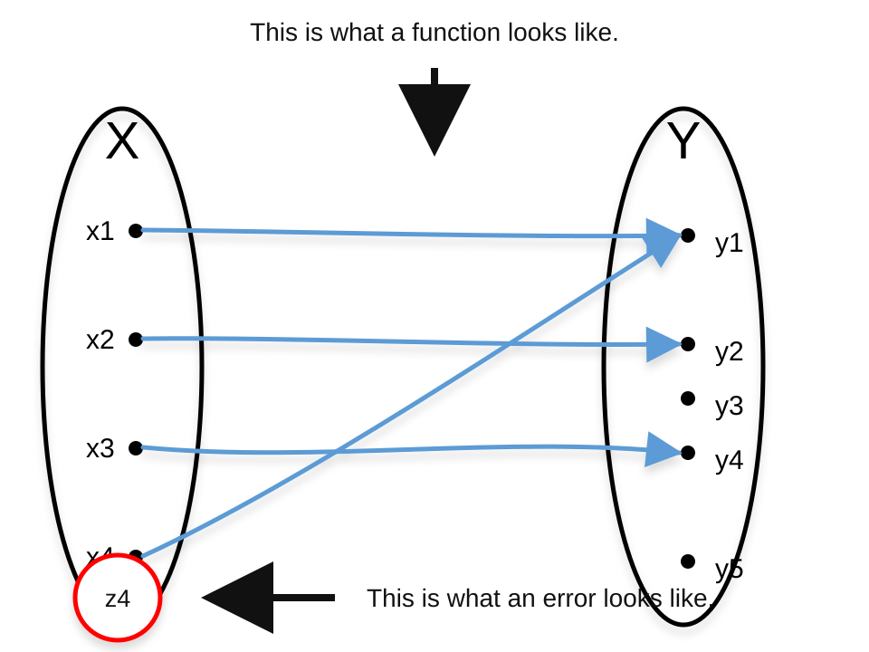
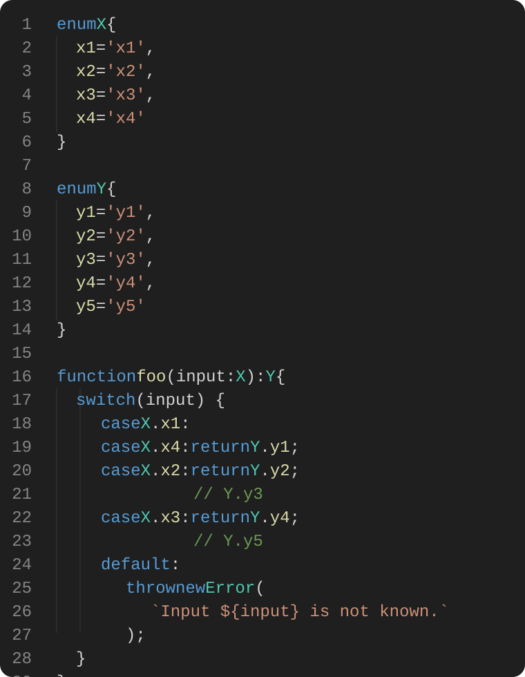
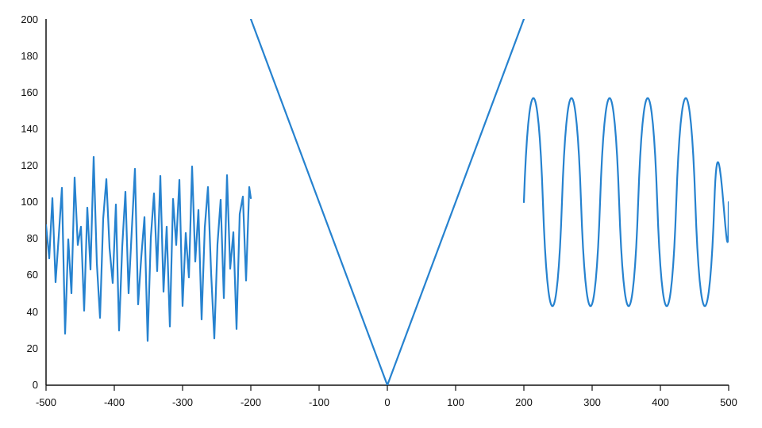
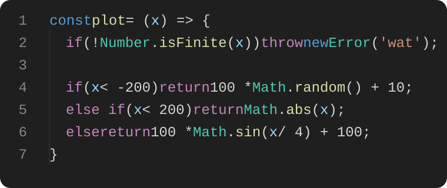

Sets, Functions, and Errors
A type is a promise about which values belong. An error is what happens when the world hands you a value outside the promise.
Misconception: we do not want our code to error.
Truth: we do not want our code to have bugs.
An error is not a bug. An error is your friend.
An error is what you report when you receive an input that is not a member of the set of all possible, allowable, or known inputs.
An error is something you report early, loudly, and with as much context as possible.
Being trigger-happy with your errors makes finding bugs easier.
Sets and functions in TypeScript
A function is a mapping between two sets.
There is an input set and an output set.
- The domain is the input set.
- The codomain is the output set.
- The range is the subset of the output set actually used by the mapping.
In the following example:
Domain: X = {x1, x2, x3, x4}
Codomain: Y = {y1, y2, y3, y4, y5}
Range: {y1, y2, y4}


Y, but the range is the smaller set of values actually returned.Errors
If our function receives an unknown input like z4, we do not want to pretend we know what it is and assign an arbitrary value.
Anything not in the set X should be treated as an error.
This matters most at trust boundaries: user input, network responses, persisted data, query strings, environment variables, and anything else the TypeScript compiler cannot inspect.
TypeScript can enforce that every declared output of our function is in the codomain, but it does not enforce the range.
By reporting an error, we alert ourselves to possible bugs or misuses of the system. By reporting an error, we clarify exactly what exists in our domain, codomain, and range.
Range and codomain
The distinction between range and codomain is subtle but important. The range is always a subset of the codomain. The codomain can include items not in the range, but not vice versa.
TypeScript usually cares about the codomain. It has no built-in way to express every useful range restriction.
For instance, you can write a function that returns type number, but not one that returns only numbers in the interval [0, 200] unless you enforce it manually.
This is the essence of what an error is: a clear report that some value is outside the set your program promised to handle.
What about a continuous example?
Runtime domain: finite numbers
Codomain: numbers
Expected range: [0, 200]
The following function can return a value for a finite float or integer, but throws an error when the input is not finite.
Notice the shape of the guard: it protects the domain first. If the output interval matters too, that is a second invariant worth checking explicitly.

